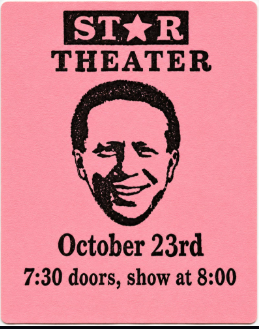

After practice, someone produces a couple pumpers of hot coffee and we all sit around, sipping our paper cups and waiting to see who leaves first. There’s no words. No high fives. Just a bunch of masked strangers loosely cobbled together. Keyboard Tom 1 (I can always tell by his construction boots) gets up and clomps from chair to chair, handing each one of us a small pink flyer in turn.

Apparently we’ve got a gig. This is the first I’m hearing about it. We don’t even have a band name, but people know Tom in this town. I guess that’s enough. Shit, I’ve never been on stage before. Except for grade school, but that doesn’t count. I almost peed my pants trying to be a convincing doghouse during that Peanuts play. Why on earth was I a doghouse? I guess there’s only so many characters and way more kids. But I regress. Holy shit. We’re playing an actual show. Holy fucking shit. It makes sense. I can see people eating this sort of thing up but are we ready? I guess we’re ready. There’s a set list on the back of the flyer. I didn’t know our songs had names. “Church Camp Bride” makes sense now, but which one is “A Very Good Price”? “Gloria Was Right”? Am I allowed to ask?
▣ Devious Comments